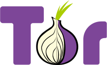

The Dark Web has many names, for example Tor Network or Onion Router. Anyone can access to the Dark Web by simply downloading software for it. A popular and very much used browser is the Tor Project's Tor Browser This is just like any other browser such as Google Chrome or Microsoft Edge, except it can also access special website addresses which ends in .onion instead of .com and such. Any traffic sent through Tor Browser is automatically anonymized and encrypted via many different hosts. The browser also has built-in protection for many kinds of tracking and de-anonymization features.
Accessing The Dark Web
You can access many fun and interesting websites through this browser, also many which co-exist on the regular Internet.
For example if you access the following URL's in Tor Browser, your communications will be fully encrypted and anonymized inside the Dark Web:
• Facebook - http://www.facebookcorewwwi.onion/
• DuckDuckGo Search Engine - http://3g2upl4pq6kufc4m.onion/
Because of the built-in anonymizing features and encryption, the Dark Net is also host of many criminal websites, marketplaces and networks.
By the way, if you're like me who doesn't like these boring texts, you're welcomed to check this playlist which KEEPS UPGRADING シ︎
But Remember!!!
The dark web has often been confused with the deep web, the parts of the web not indexed (searchable) by search engines. The term Dark Web first emerged in 2009, however, it is unknown when the actual dark web first emerged. Many internet users only use the surface web, data that can be accessed by a typical Google browser. The dark web forms a small part of the deep web, but requires custom software in order to access its content. This confusion dates back to at least 2009. Since then, especially in reporting on Silk Road, the two terms have often been conflated, despite recommendations that they should be distinguished. The Dark Web, also known as Darknet websites, are accessible only through networks such as Tor ("The Onion Routing" project) that are created specifically for the Dark Web.
Tor browser and Tor-accessible sites are widely used among the darknet users and can be identified by the domain ".onion".Tor browsers create encrypted entry points and pathways for the user, allowing their Dark Web searches and actions to be anonymous. Identities and locations of darknet users stay anonymous and cannot be tracked due to the layered encryption system. The darknet encryption technology routes users' data through a large number of intermediate servers, which protects the users' identity and guarantees anonymity. The transmitted information can be decrypted only by a subsequent node in the scheme, which leads to the exit node. The complicated system makes it almost impossible to reproduce the node path and decrypt the information layer by layer. Due to the high level of encryption, websites are not able to track geolocation and IP of their users, and users are not able to get this information about the host. Thus, communication between darknet users is highly encrypted allowing users to talk, blog, and share files confidentially.
A December 2014 study by Gareth Owen from the University of Portsmouth found that the most commonly hosted type of content on Tor was child pornography, followed by black markets, while the individual sites with the highest traffic were dedicated to botnet operations (see attached metric). Many whistleblowing sites maintain a presence as well as political discussion forums. Sites associated with Bitcoin, fraud-related services, and mail order services are some of the most prolific. As of December 2020, the number of active Tor sites in .onion was estimated at 76,300 (containing a lot of copies). Of these, 18 000 would have original content. In July 2017, Roger Dingledine, one of the three founders of the Tor Project, said that Facebook is the biggest hidden service. The Dark Web comprises only 3% of the traffic in the Tor network. A February 2016 study from researchers at King's College London gives the following breakdown of content by an alternative category set, highlighting the illicit use of .onion services.
There have been arguments that the dark web promotes civil liberties, like "free speech, privacy, anonymity." Some prosecutors and government agencies are concerned that it is a haven for criminal activity. The deep and dark web are applications of integral internet features to provide privacy and anonymity. Policing involves targeting specific activities of the private web deemed illegal or subject to internet censorship. When investigating online suspects, police typically use the IP (Internet Protocol) address of the individual, however, due to Tor. browsers creating anonymity, this becomes an impossible tactic. As a result, law enforcement has employed many other tactics in order to identify and arrest those engaging in illegal activity on the dark web. OSINT, or Open Source Intelligence, are data collection tools that legally collect information from public sources. OSINT tools can be dark web specific to help officers find bits of information that would lead them to gaining more knowledge about interactions going on in the dark web. In 2015 it was announced that Interpol now offers a dedicated dark web training program featuring technical information on Tor, cybersecurity and simulated Darknet market takedowns. In October 2013 the UK's National Crime Agency and GCHQ announced the formation of a "Joint Operations Cell" to focus on cybercrime. In November 2015 this team would be tasked with tackling child exploitation on the dark web as well as other cybercrime. In March 2017 the Congressional Research Service released an extensive report on the dark web, noting the changing dynamic of how information is accessed and presented on it; characterized by the unknown, it is of increasing interest to researchers, law enforcement, and policymakers. In August 2017, according to reportage, cybersecurity firms which specialize in monitoring and researching the dark web on behalf of banks and retailers routinely share their findings with the FBI and with other law enforcement agencies "when possible and necessary" regarding illegal content. The Russian-speaking underground offering a crime-as-a-service model is regarded as being particularly robust.
Thanks for visiting this website
© This website is created by Jawad Al Muhtasim